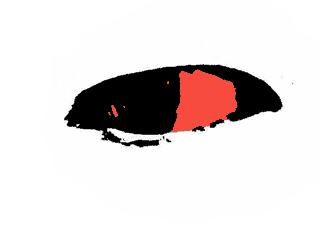
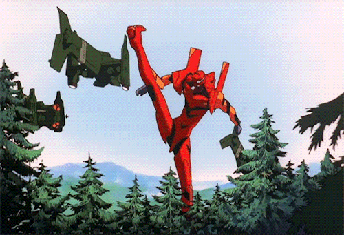
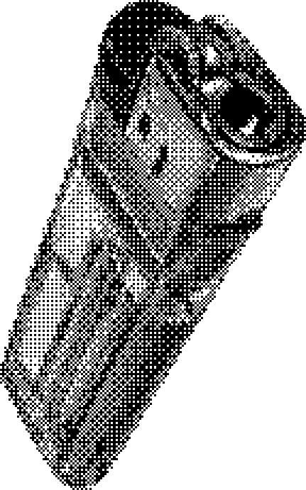
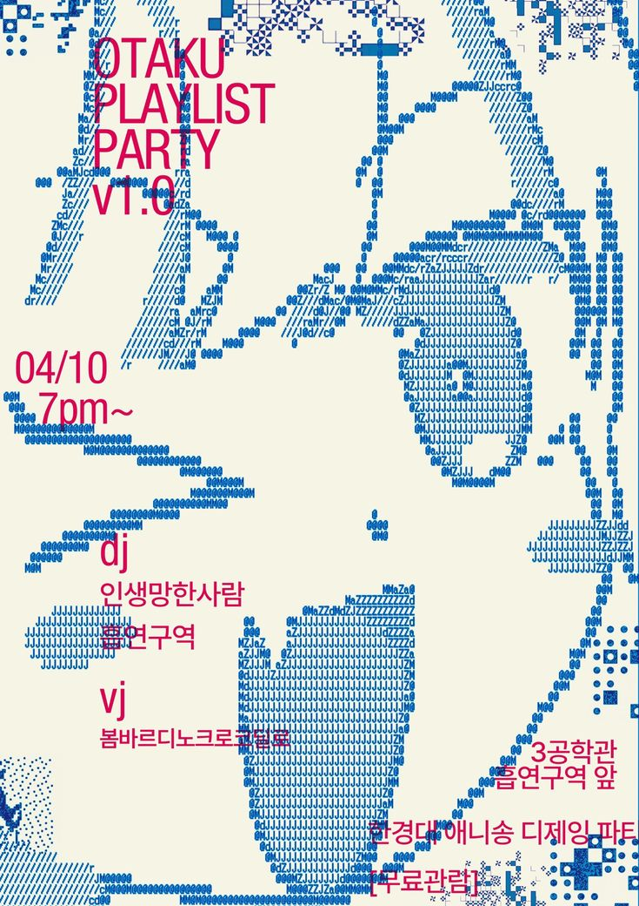

BlogSpot!

Este es mi blog donde estare subiendo las ultimas novedades sobre mi carrera artistca, como streamer y mis diferentes proyectos como creador de contenido.
Tambien estare subiendo mis poemas y escritos que he hecho a lo largo de mi vida, espero que los disfruten y me den su opinion sobre ellos.
Entre trabajar Entrenar y estudiar .. A veces no me da tiempo para dibujar tocar la guitarra rapear o hacer mis proyectos de contenido, pero siempre trato de sacar tiempo para hacer lo que me gusta y compartir algo con ustedes.
Proyects --- Desarrollo de sofwere y contenido autodidacta y Gaming LoL y Minectraft durante los streams.




Asuka Langley Soryu
La lucha de Asuka representa el valor de quien decide seguir adelante cuando todo parece derrumbarse. Su batalla no nace de la ausencia de miedo, sino de la fuerza de amar lo suficiente como para enfrentarlo. Cada caída demuestra que el verdadero coraje consiste en levantarse una vez más, incluso cuando nadie espera que lo haga. Su determinación recuerda que las derrotas no definen el destino de quien se niega a renunciar a sus convicciones. Porque el amor, cuando es auténtico, puede convertirse en la voluntad más poderosa para resistir el dolor y la desesperanza. Y mientras exista el deseo de seguir luchando, jamás habrá una derrota definitiva para el espíritu.






- Soldado exiliado 🪖 - Soldado exiliado 🪖 _Carta documento 📃 Reconocimiento: La seguridad es buen arte pero Esta guerra es entre malos y buenos artistas. Gracias mamá por la existencia. - 505 algo está bien //* Cambio.